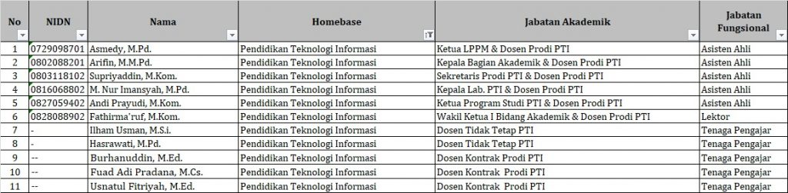

about
Profil Laboratorium PTI
"Laboratorium Pendidikan Teknologi Informasi merupakan pusat pembelajaran dan pengembangan keterampilan di bidang teknologi informasi, meliputi jaringan komputer, pemrograman, keamanan siber, dan teknologi terbaru lainnya." Profil Pembuat website. klik link
Struktur Laboratorium Prodi PTI
Dosen Pengajar Prodi PTI
Kegiatan Program Studi PTI
- Praktikum mahasiswa.
- Workshop dan pelatihan.
- Penelitian dan pengembangan.
- Kompetisi IT (Desain, coding, networking).
Website resmi STKIP Yapis Dompu stkipyapisdompu.ac.id